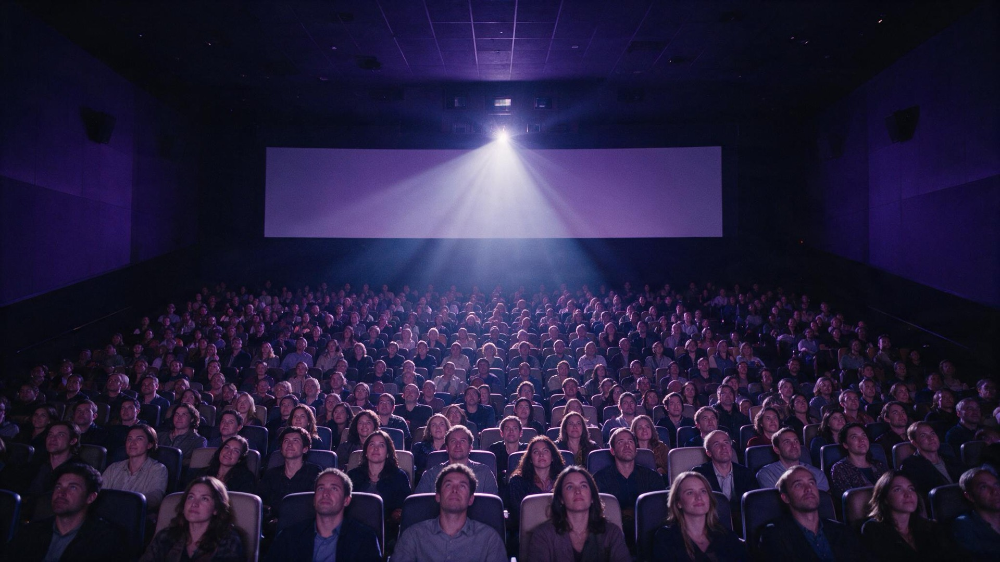

Piattaforme
L'affermazione dello streaming ha modificato i modelli distributivi tradizionali e aumentato la pressione competitiva.

Analisi degli impatti di un'industria che sostiene crescita, lavoro e coesione sociale attraverso il racconto del Paese.
La spesa annua del comparto audiovisivo, escluso il cinema: è lo shock di domanda che alimenta il modello.
L'incremento di domanda stimola il fatturato delle imprese nazionali lungo le catene del valore.
Nettando gli scambi intermedi si stima l'impatto sul PIL nazionale.
Per soddisfare l'incremento di produzione si impegnano specifiche unità lavorative, calcolate in equivalenti a tempo pieno (ETP).
I redditi di famiglie e imprese sono la componente del reddito nazionale derivante dai redditi da lavoro e da capitale.
Il gettito fiscale rappresenta il contributo alle casse statali derivanti dalle tasse.
Valore monetizzato degli impatti sociali e culturali, al netto della spesa sostenuta per generarli.
Rapporto fra benefici sociali netti e costi economici: ogni euro speso dal settore genera 4,5 euro di benefici sociali.
Dall'analisi dei dati più recenti (anno 2023) emerge come il settore audiovisivo (escluso il cinema) rappresenti un motore economico particolarmente efficiente per il nostro Paese, in grado di generare benessere diffuso grazie alla sua capacità di attivare filiere produttive diversificate e propagare i suoi effetti in molteplici comparti e territori.
La spesa dell'Audiovisivo, pari a 8 miliardi di euro nel 2023, non resta infatti confinata all'interno del settore ma si trasmette ai fornitori dell'indotto, contribuendo in modo rilevante alla creazione di Valore Aggiunto delle numerose attività collegate (per quasi 12 miliardi annui di PIL), all'occupazione (per oltre 150 mila posti di lavoro stabili a tempo pieno) e ai redditi delle famiglie (11,6 miliardi l'anno di salari generati). Oltre alle imposte direttamente pagate dalle imprese attive nel comparto audiovisivo, la sua spesa genera in via indiretta un gettito fiscale che ha superato nel 2023 i 3 miliardi, pari a oltre 8 volte gli incentivi statali erogati al settore sottoforma di TAX Credit per le opere scripted, pari a quasi 380 milioni per il 2023.
L'indicatore chiave che spiega la capacità di amplificazione di valore del comparto audiovisivo è il moltiplicatore economico. Dividendo infatti il PIL generato per la spesa relativa, emerge un moltiplicatore pari a 1,47 che dall'analisi risulta sensibilmente superiore a quello di uno scenario “neutro” italiano di spesa pubblica che è di 1,3 (+13% in media). In altre parole, ogni euro speso dall'audiovisivo produce più valore per il Paese di quanto venga generato in media dalla spesa pubblica nazionale.
La capacità dell'audiovisivo di generare valore emerge in modo ancora più evidente quando, accanto ai risultati economici, si considerano i benefici sociali e culturali come il valore del tempo dedicato alla fruizione dei contenuti, quello del benessere individuale, del patrimonio culturale nazionale e delle ricadute sui territori in termini di attrattività turistica. Contabilizzando in valore monetario questi impatti sociali si raggiungono 25 miliardi di euro di benefici netti (benefici – spesa) per un Ritorno Sociale dell'Investimento (SROI) pari a 4,5. In altri termini, ogni euro speso da settore audiovisivo genera 4,5 euro di benefici sociali.
Questo studio rientra in un percorso di ricerca promosso dall'Associazione Produttori Audiovisivi (APA), finalizzato a costruire una libreria di analisi basate su solide evidenze quantitative. L'obiettivo è contribuire in modo oggettivo e informato al dibattito nazionale sul ruolo della produzione culturale, sulle dinamiche del mercato globale in cui il settore italiano compete e sulle politiche pubbliche a sostegno dello sviluppo del comparto.
Il dibattito è oggi particolarmente urgente per due ordini di ragioni. Da un lato, l'audiovisivo svolge una funzione strategica nel rafforzamento dell'identità del Paese e della coesione sociale. Dall'altro, il settore sta attraversando una trasformazione profonda a livello globale. L'affermazione delle piattaforme di streaming ha modificato i modelli distributivi tradizionali e aumentato la pressione competitiva. Parallelamente, l'intelligenza artificiale generativa è destinata a incidere sull'intera filiera, dalla scrittura alla post-produzione fino alla gestione dei diritti, introducendo opportunità di efficienza e produttività, ma anche rischi sistemici per la tutela degli autori e per il patrimonio di competenze che, insieme al contesto storico-paesaggistico, ha sostenuto finora la competitività dell'industria italiana dell'immaginario.
A questi fattori si aggiunge una crescente competizione fiscale internazionale, che tende a spostare le produzioni verso Paesi in grado di offrire incentivi più generosi, certi e rapidi. Questo scenario rende ancora più necessaria una riflessione sul modello produttivo e sulle politiche di sostegno utili a preservare e rafforzare la capacità competitiva del comparto nazionale.
In questo quadro, lo studio realizza un'analisi degli impatti economici e sociali della spesa annuale in contenuti audiovisivi, in particolare produzioni televisive, documentari e format unscripted, e valuta come i costi sostenuti si propaghino lungo l'intero tessuto produttivo nazionale, generando effetti positivi che vanno oltre la spesa iniziale, in termini di filiere attivate, ricadute settoriali e territoriali.
L'affermazione dello streaming ha modificato i modelli distributivi tradizionali e aumentato la pressione competitiva.
L'intelligenza artificiale generativa inciderà sull'intera filiera: opportunità di efficienza, ma rischi per autori e competenze.
Le produzioni si spostano verso Paesi in grado di offrire incentivi più generosi, certi e rapidi.
In questa sezione viene presentata un'analisi delle spese sostenute nel settore audiovisivo e cinematografico nel corso del 2023.
Il comparto nel suo complesso conta quasi 9.000 imprese attive, oltre 46.000 occupati e un fatturato totale superiore a 13 miliardi di euro. Si tratta di un settore di rilievo significativo per l'economia nazionale, con un peso rilevante in termini di occupazione, valore aggiunto e capacità di generare valore economico su tutto il territorio.
Per alimentare correttamente il modello di impatto macroeconomico, è stata condotta un'analisi preliminare approfondita della struttura della spesa del comparto, partendo dal perimetro complessivo audiovisivo e cinematografico e arrivando poi all'isolamento della sola componente audiovisiva oggetto di studio.
In questo contesto, lo studio ha analizzato la spesa complessiva, includendo acquisti di beni e servizi e costi del personale, e la sua distribuzione lungo le principali fasi della produzione, considerando l'insieme di produzioni cinematografiche, serie TV, documentari e programmi unscripted.
Complessivamente, nel 2023 la spesa del comparto audiovisivo inclusa la produzione cinematografica ha raggiunto 12,44 miliardi di euro. Le spese vengono contabilizzate prevalentemente nel settore ATECO “Servizi di informazione e comunicazione” (J), con focus su:
L'analisi dei sottosettori ha consentito di individuare e isolare sei macrocategorie di spesa da esaminare in dettaglio: software, produzione, post-produzione, distribuzione, proiezione, programmazione e trasmissione.
I dati di riferimento, estratti dal database ISTAT e relativi al periodo 2020–2023, consentono di descrivere l'andamento e la composizione della spesa per ciascuna macrocategoria.
Poiché la spesa complessiva include anche il comparto cinematografico, per le finalità di questa analisi il perimetro è stato ristretto al solo audiovisivo (serie TV, documentari e programmi unscripted). Per stimare il valore della spesa riferibile esclusivamente a tale componente sono stati utilizzati:
Secondo le stime APA per il 2023, la spesa per la produzione di opere audiovisive e cinematografiche Italian Original (a maggioranza di finanziamento italiano) ammonta a circa 2 miliardi di euro complessivi: circa 1,3 miliardi riferibili a serie TV, documentari e unscripted, e circa 700 milioni al cinema.
Partendo da questa distribuzione, è stato possibile derivare una stima della spesa in costi di produzione, post-produzione e distribuzione per cinema e audiovisivo, nonché la ripartizione tra risorse italiane ed estere. In termini complessivi, per il 2023 la spesa stimata per il solo settore audiovisivo (escluso il cinema) risulta poco superiore a 8 miliardi di euro, mentre il comparto cinematografico assorbe circa 4,4 miliardi di euro.
Per ottenere una distribuzione territoriale coerente della spesa audiovisiva (escluso il cinema), è stato utilizzato il valore aggiunto storico del comparto, disaggregato a livello regionale sulla base dei dati ISTAT. Questo indicatore risulta coerente con la distribuzione territoriale delle opere e con il numero di imprese per regione.
L'approccio consente di calcolare quote di allocazione medie realistiche, che riflettono la concentrazione storica delle attività produttive, delle imprese e delle filiere. In particolare, emergono poli consolidati in regioni come Lazio (anche per l'ecosistema produttivo legato alla Rai e agli studi produzione storici della Capitale), Lombardia (servizi, post-produzione e filiere tecniche), Campania, Piemonte e altre aree con specializzazioni rilevanti.
Applicando tali quote alla spesa complessiva stimata per il solo audiovisivo (circa 8 miliardi di euro nel 2023), si ottiene una distribuzione regionale nella quale Lazio e Lombardia risultano le principali aree di spesa, in coerenza con la localizzazione dei principali centri produttivi e dei servizi connessi.
Benefici netti di tipo diretto, indiretto e indotto nel periodo di spesa
La spesa del comparto audiovisivo può essere letta come uno shock di domanda di beni e servizi che attiva capacità produttiva lungo la filiera e genera un impatto positivo sulle principali dimensioni dell'economia. In termini operativi, ogni euro speso non produce effetti solo nel perimetro stretto del settore, ma si trasmette ai fornitori, ai sub-fornitori e, attraverso i redditi generati, a una parte più ampia del sistema economico.
Ciascuna delle tre componenti (diretta, indiretta, indotta) è quantificata attraverso le principali variabili standard utilizzate nelle valutazioni macroeconomiche, cioè:
Nel loro insieme, queste dimensioni consentono di descrivere non solo “quanto” il settore produce, ma come la spesa si trasmette lungo filiere e territori, offrendo una misura della portata sistemica dell'audiovisivo e della sua capacità di trasformare investimenti produttivi in impatti economici e sociali osservabili.
L'analisi evidenzia che ogni euro speso nel settore audiovisivo genera un contributo al PIL pari a 1,47 euro, incorporando gli effetti diretti, indiretti e indotti lungo la filiera attivata.
In termini di valore della produzione, ogni euro speso dal comparto genera un impatto economico pari a 2,93 euro. Sul fronte del lavoro, il moltiplicatore occupazionale pari a 19 ETP per milione di euro indica che, per ogni milione di euro di spesa, vengono attivate mediamente circa 19 unità di lavoro equivalenti a tempo pieno nell'anno di riferimento dell'analisi.
Un confronto particolarmente informativo emerge dall'applicazione del medesimo modello macroeconomico a uno scenario controfattuale: qualora la stessa spesa fosse allocata secondo il profilo medio della spesa pubblica nazionale — ossia distribuita per settore e area geografica in coerenza con la struttura media della spesa della pubblica amministrazione — il moltiplicatore del PIL risulterebbe pari a 1,3 euro per ogni euro speso.
Il differenziale tra i due scenari. La spesa nel comparto audiovisivo ha una capacità di attivazione economica superiore rispetto a un impiego “medio” delle risorse da parte della PA. In questa prospettiva, le politiche di sostegno al settore possono tradursi, a parità di risorse, in una maggiore generazione di valore aggiunto, occupazione e ricadute fiscali, rispetto a un'allocazione alternativa coerente con la spesa pubblica nazionale.
Il grafico riporta l'impatto della spesa audiovisiva su PIL, valore della produzione e occupazione per regione, distinguendo le tre componenti che compongono l'effetto complessivo: diretta, indiretta e indotta. Questa scomposizione consente di leggere non solo dove si concentra la spesa, ma anche come essa si propaghi sul territorio attraverso le filiere e la reimmissione dei redditi nell'economia.
Focalizzandosi sul PIL, emerge innanzitutto una dinamica coerente con la geografia produttiva del settore: le regioni che assorbono più spesa e ospitano i principali poli audiovisivi tendono a registrare anche i maggiori impatti diretti. In particolare, la Lombardia mostra il contributo più elevato, associato anche alla componente diretta più ampia. Seguono Lazio e Campania, a conferma della centralità di alcune aree in cui si concentra l'ecosistema produttivo e dei servizi connessi.
Tuttavia, la lettura regionale non può fermarsi all'impatto diretto. Poiché la spesa audiovisiva attiva anche settori interconnessi lungo la catena del valore e genera redditi che alimentano ulteriore domanda, in diverse regioni la componente indiretta e indotta può risultare relativamente più rilevante rispetto alla spesa iniziale localizzata. Ne deriva che alcune regioni, ad esempio la Toscana, pur presentando un impatto diretto inferiore rispetto ad altri territori, possono registrare un contributo complessivo più elevato grazie alla propagazione degli effetti attraverso forniture, sub-forniture e consumi indotti. In sostanza, il settore non produce benefici soltanto dove “si gira” o dove si concentrano le imprese principali, ma anche dove si colloca una parte delle filiere attivate e dei consumi generati.
Nel complesso, l'impatto geografico della spesa audiovisiva tende a concentrarsi nelle regioni che presentano un contributo più elevato in termini di PIL e una maggiore densità di filiere produttive, in linea con la localizzazione dei principali centri di produzione italiani.
L'impatto più significativo si osserva in Lombardia, con circa 3.750 milioni di euro di contributo complessivo al PIL, seguita da Lazio, Piemonte ed Emilia-Romagna — regioni che, per struttura economica e capacità produttiva, mostrano generalmente un livello di valore aggiunto superiore alla media nazionale.
Se si osserva l'impatto pro capite, le differenze tra le regioni si attenuano sensibilmente. Questo passaggio è importante perché consente di distinguere la “scala” economica (che naturalmente premia i grandi poli) dalla capacità del settore di generare ricadute distribuite su tutto il territorio.
In termini pro capite, gli effetti più significativi si registrano nel Lazio (circa 449 € per abitante), in Lombardia (circa 374 € per abitante) e, in terza posizione, nella Valle d'Aosta (circa 245 € per abitante). Quest'ultimo risultato è particolarmente informativo: la Valle d'Aosta, pur risultando tra le ultime in valore assoluto per dimensione economica, mostra un impatto più elevato quando rapportato alla popolazione. Volumi di spesa e filiere attivate relativamente contenuti possono tradursi in un effetto pro capite più marcato.
L'analisi congiunta della distribuzione geografica e settoriale del PIL generato evidenzia che Lombardia e Lazio sono le regioni che registrano il contributo economico più rilevante. In entrambe, i settori che assorbono la quota maggiore di valore aggiunto attivato risultano l'ICT e le attività immobiliari, con il comparto audiovisivo a seguire. Questo profilo è coerente con la presenza di filiere tecniche e digitali (software, post-produzione, servizi avanzati) e con la rilevanza degli effetti indotti che si manifestano anche attraverso spese e investimenti legati alla componente immobiliare.
In sintesi, i risultati mostrano una doppia evidenza: una concentrazione naturale degli impatti nei principali poli produttivi e, al tempo stesso, una capacità di diffusione degli effetti sul territorio, che emerge con maggiore chiarezza nella lettura pro capite e nella scomposizione tra diretto, indiretto e indotto.
Il Social Return on Investment (SROI) è una metodologia che consente di stimare, in modo strutturato e trasparente, il valore sociale generato da un investimento.
A differenza delle metriche puramente finanziarie, lo SROI non misura soltanto “quanto rende” in termini economici, ma anche quali cambiamenti produce per le persone e per la collettività: benessere individuale, salute, competenze, coesione sociale, effetti culturali e, nel caso dell'audiovisivo, anche ricadute su attrattività territoriale e turismo.
L'utilità dello SROI risiede nella possibilità di rispondere a una domanda concreta di policy e di valutazione pubblica: “Che valore complessivo produce un euro investito?” Non solo in termini di PIL o occupazione (che sono misure macroeconomiche), ma anche in termini di benefici sociali e culturali che normalmente non entrano nei conti nazionali.
In sintesi, lo SROI rende “misurabile” un valore che esiste già ma che spesso resta invisibile: il contributo dell'audiovisivo non solo alla produzione economica, ma anche alla qualità della vita e al capitale culturale del Paese.
L'analisi SROI si fonda su due pilastri metodologici ampiamente utilizzati nelle valutazioni di impatto.
È la “mappa logica” che descrive come un intervento produce effetti. Nel caso dell'audiovisivo, la sequenza è Input → Output → Outcome.
Risorse impiegate: spesa in produzione audiovisiva, lavoro, servizi, investimenti.
Budget audiovisivo
Risultati immediati: contenuti realizzati, audience raggiunta, ore di fruizione, opere ambientate nei territori.
Prodotti audiovisivi
Cambiamenti generati negli stakeholder: benessere psicofisico, apprendimento, relazioni sociali, attrattività territoriale, valore culturale e identitario.
Cambiamento vissuto dagli stakeholder
Una volta identificati gli outcome, l'ECBA li quantifica e, dove appropriato, li monetizza, utilizzando proxy economiche e assunzioni esplicitate, in modo da renderli:
Il framework è coerente con principi di contabilità sociale comunemente richiamati come SGAAP (principi contabili sociali generalmente accettati), che insistono su: identificazione degli stakeholder, materialità degli outcome, prudenza nelle assunzioni, tracciabilità delle fonti.
SROI = Benefici sociali netti / Costi economici. I benefici sociali netti sono la somma dei benefici monetizzati per i principali outcome (e, se presenti, dei costi sociali), opportunamente trattati secondo le regole metodologiche, ad esempio evitando doppie contabilizzazioni. I costi economici rappresentano il costo “economico” delle risorse impiegate, espresso attraverso gli shadow prices (prezzi ombra), cioè correzioni utilizzate in ECBA per rendere i valori più aderenti al costo/valore sociale delle risorse rispetto ai soli prezzi di mercato.
Il processo valutativo ha:
Di cui: 74,6% TV, 25,4% piattaforme VoD
Di cui: 20 TV, 8 piattaforme VoD
Di cui: 5,4 milioni per le opere scripted, 2,7 milioni per le opere unscripted
Di cui: 700 mila italiani pernottanti, 150 mila stranieri pernottanti, 7,6 milioni italiani day user
Complessivo per produzione rispetto a tutte le produzioni
* Per opere scripted si intendono le produzioni audiovisive di finzione o non basate su una sceneggiatura scritta in anticipo, come serie TV, sitcom, cartoni e alcuni documentari. Le opere unscripted non hanno una sceneggiatura rigida e si basano su improvvisazione.
** In sede di valutazione dei benefici, è stata applicata una riduzione del 30% alle ore medie di visione.
Lo studio distingue tre macro-componenti di beneficio: valore edonico del tempo, sfera personale, cineturismo e cultura. Questa tassonomia serve a evitare un concetto generico di “beneficio sociale” e a rendere trasparente da dove arriva il valore stimato.
I benefici legati al valore del tempo (TV e piattaforme digitali) vengono stimati a partire dal tempo libero dedicato alla fruizione dei contenuti. Il punto non è che “guardare un contenuto” sia sempre e comunque un beneficio, ma che una parte del tempo libero è vissuta come esperienza culturale e ricreativa: coinvolgimento emotivo, intrattenimento, arricchimento personale.
L'analisi considera un'audience media di 8,1 milioni di spettatori per produzione, di cui 5,4 milioni per le opere scripted e 2,7 milioni per le opere unscripted. Per le opere scripted, 3,5 milioni fruiscono della visione tramite TV e 1,9 milioni tramite piattaforme digitali; il tempo medio di visione è stimato in circa 7 ore per produzione. Per le opere unscripted, il tempo medio stimato è pari a circa 20 ore per produzione.
La monetizzazione di questo tempo produce un valore attualizzato di circa 20,6 miliardi di euro, pari al 63,5% dei benefici stimati complessivi. Tale valore è composto da:
Esempio. Se un contenuto “consuma” ore di tempo libero che le persone scelgono volontariamente di dedicare a quella fruizione, una parte di quel tempo può essere interpretata come valore. Il modello non “prezza la cultura”, ma traduce in un'unità comparabile (euro) un beneficio che altrimenti resterebbe solo qualitativo.
I contenuti audiovisivi generano benefici diretti nella sfera personale, in particolare:
Nel complesso, la sfera personale genera un valore attualizzato di circa 6,1 miliardi di euro, pari al 18,8% dei benefici stimati.
Il comparto audiovisivo contribuisce alla promozione dei territori e alla valorizzazione culturale, stimolando curiosità e desiderio di visita, con effetti sui flussi turistici. Lo studio considera:
Accanto alla componente turistica, i contenuti audiovisivi rafforzano la legacy culturale nazionale, valorizzando identità, tradizioni e memoria collettiva. Il valore economico di questo impatto è stimato tramite la disponibilità a pagare (DAP) per l'ingresso a un museo (proxy pari a 8,9 €), intesa come misura del valore attribuito a un'esperienza culturale che rafforza l'identità nazionale.
Nel complesso, la dimensione cineturismo e cultura genera un valore attualizzato di circa 5,7 miliardi di euro, pari al 17,7% dei benefici stimati.
In sintesi, la lettura SROI consente di ricostruire e rendere comparabili benefici che il solo PIL non intercetta: il valore del tempo di fruizione, i miglioramenti nella sfera personale, la coesione sociale e gli effetti su territori e patrimonio culturale. Il risultato pari ad uno SROI di 4,5 indica che l'audiovisivo non genera soltanto produzione economica, ma anche un ritorno sociale misurabile, fornendo un'ulteriore base informativa per valutazioni di policy fondate su evidenze.
Le analisi svolte per il settore audiovisivo sono due e rispondono a finalità complementari: stimare gli impatti macroeconomici della spesa e misurare i benefici sociali e culturali generati dal comparto. Entrambe le grandezze di output sono espresse in valori monetari, ma non sono direttamente sommabili, perché descrivono dimensioni diverse: la prima misura gli effetti economici contabilizzabili nei conti nazionali (produzione, PIL, occupazione, redditi, gettito), la seconda monetizza outcome sociali e culturali attraverso proxy e assunzioni esplicitate. Considerate congiuntamente, le due analisi consentono una lettura più completa: l'impatto macroeconomico chiarisce come la spesa si propaghi lungo filiere e territori, mentre lo SROI rende visibile il valore sociale e culturale generato, spesso non intercettato dagli indicatori economici tradizionali.
L'analisi di impatto macroeconomico è condotta mediante un modello SAM, strumento riconosciuto a livello internazionale per la valutazione degli impatti economici e sociali. Il modello è configurato utilizzando dati ISTAT dell'economia italiana per l'anno di riferimento. La versione adottata presenta una disaggregazione in 63 settori e una disaggregazione territoriale a livello regionale.
Lo scenario di analisi utilizza come shock di domanda la spesa del comparto audiovisivo nel 2023 per l'acquisto di beni e servizi, così come costo del personale sul mercato nazionale. Gli impatti sono stimati secondo le dimensioni standard delle valutazioni macroeconomiche, in termini di contributo a PIL, Valore della produzione, Occupazione, Redditi di famiglie e imprese, Gettito fiscale.
Il modello consente inoltre di distinguere tre canali di trasmissione degli effetti. Quello diretto, generato dai fornitori primari di beni e servizi acquistati dal comparto. Il canale indiretto, dovuto alla propagazione lungo le catene di sub-fornitura. E infine quello indotto, attribuibile alla maggiore spesa di famiglie e imprese resa possibile dall'incremento dei redditi. È proprio la ricostruzione di questi canali di propagazione che permette di stimare la portata sistemica dell'audiovisivo: la spesa iniziale attiva una rete estesa di settori collegati e produce effetti distribuiti nel tempo e nello spazio economico del Paese.
È importante sottolineare come mentre il PIL misura la ricchezza effettivamente generata, evitando duplicazioni tipiche del valore della produzione: quest'ultimo, infatti, cattura l'attivazione complessiva lungo le filiere, includendo passaggi intermedi.
Gli impatti stimati descrivono gli effetti della spesa in condizioni di ceteris paribus (a parità di altre condizioni), con le assunzioni tipiche dei modelli di contabilità sociale.
Per maggiori dettagli sulla metodologia dell'analisi di impatto, è possibile consultare la seguente Nota metodologica.
In parallelo, è stata realizzata un'analisi volta a stimare i cambiamenti sociali e culturali associati alla produzione audiovisiva e alla fruizione dei contenuti, adottando una metodologia di Economic Cost-Benefit Analysis applicata all'interno della Teoria del Cambiamento (input → output → outcome), in linea con prassi metodologiche consolidate.
La procedura prevede l'identificazione degli outcome (benefici e, ove rilevanti, costi) per i principali stakeholder, la misurazione quantitativa degli stessi, la conversione in valori monetari tramite proxy e parametri esplicitati, per favorire comparabilità e trasparenza, e infine il calcolo dell'indicatore SROI, definito come rapporto tra benefici sociali netti generati e costi sostenuti per generarli, opportunamente attualizzati al tasso di sconto sociale.
Va sottolineato che lo SROI non misura un contributo diretto al “PIL”, piuttosto rende leggibile in euro il valore sociale e culturale di outcome che, per loro natura, non entrano nei conti nazionali.
Le stime per il calcolo dei benefici sociali dipendono da proxy e assunzioni (esplicitate nella nota metodologica) e vanno interpretate come ordine di grandezza del valore generato, più che come misura contabile puntuale.
La conversione in valori monetari ha l'obiettivo di migliorare la comparabilità tra dimensioni diverse, non a esprimere valori finanziari della cultura.
Le fonti dati utilizzate per alimentare la procedura di stima dello SROI includono: APA, DGCA, CeRTA, Banca d'Italia, ISTAT, Unioncamere, JFC Tourism & Management.
Per maggiori dettagli sul calcolo dello SROI, è possibile consultare la seguente Nota metodologica.
Misuriamo impatti macroeconomici e ritorno sociale con modelli riconosciuti e dati verificabili.